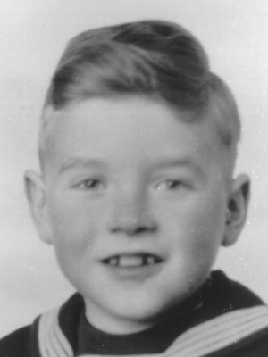

Portrait d’archive
Hans Jeannot Ament
Hans Jeannot AMENT
Hans Jeannot AMENT est né le 15/02/1934 à Vienne en Autriche.
Rassemblé à Lyon, il est déporté à Auschwitz le 30/05/1944 par le convoi n°75. Il est mort en déportation.
Fils de Max et de Ernestina.
Dernière adresse connue : (Izieu)
Nom : AMENT
Prénom(s) : Hans Jeannot
Date naissance : 15/02/1934
Âge (ans) : 10
Lieu naissance : Vienne
Pays ou département : Autriche
Lieu rassemblement : Lyon
Dernière adresse : ?
Ville : Izieu (Ain)
Code postal : 01300
N° Convoi : 75
Date déportation : 30/05/1944
Informations diverses : Fils de Max Ament (28/06/1895, Sanok, Podkarpackie, Poland) et de Ernestina, décédé de la tuberculose à Hauteville dans l'Ain le 07/08/1944. Sa famille avait reçu en mars 1940 un visa pour les États-Unis mais attendit en vain des places sur un bateau. Son père est déporté par le convoi n°50 du 4/3/1943. Il est un des enfants de la maison d’Izieu et sera déporté par le convoi 75 du 30/05/1944.
Ament (Hans), né le 15 février 1934 à Vienne (Autriche), décédé le 4 juin 1944 à Auschwitz (Pologne) et non le 18 avril 1944 à Auschwitz (Pologne). JO
Lieu de déportation : Auschwitz
Lieu de départ : Drancy
Nombre total de déporté·e·s du convoi : 1000
Gazé·e·s à l'arrivée : 627 (62,7 %)
Survivant·e·s en 1945 : 99 (9,9 %)